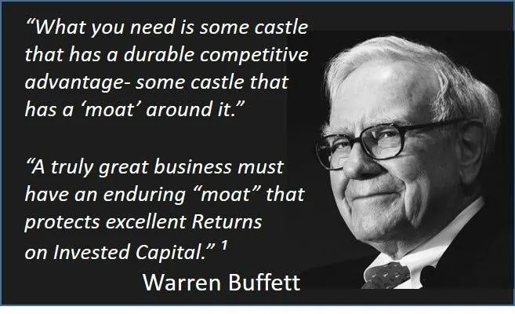
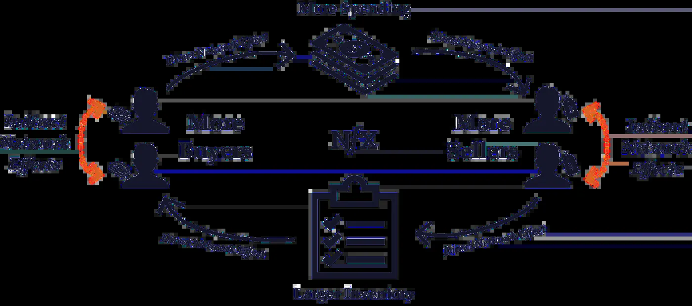
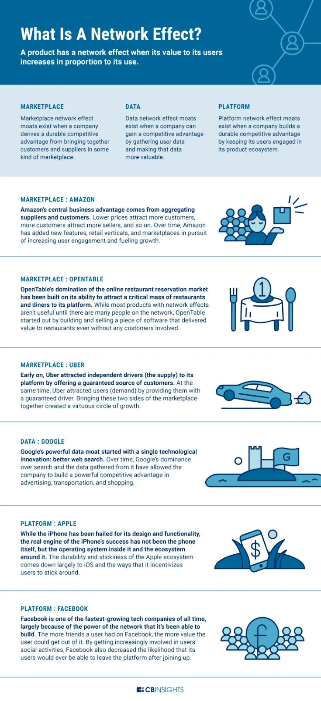
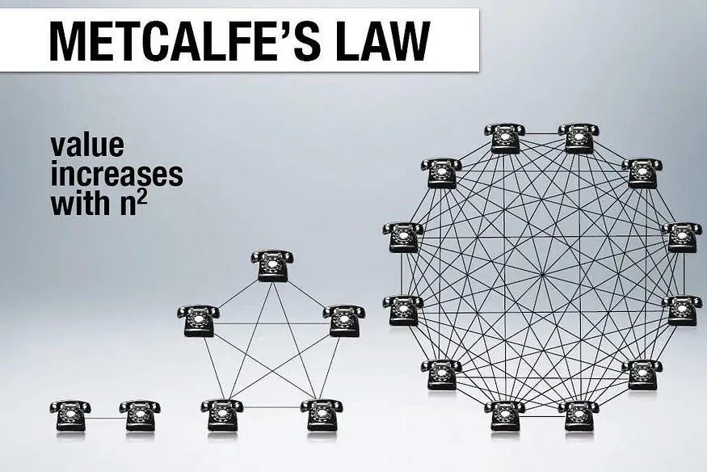

We as investors instinctively know that identifying sectors and businesses enjoying high growth is a good starting point for finding the most profitable investments. But when you have been a professional investor for decades like me, you realise that high growth potential isn’t actually the only critical variable in making great investments.
But why is high growth not enough? In a capitalist system, areas of growth and high potential returns attract capital in the form of new competitors, so pretty quickly, you get to a situation where the sizeable returns you thought the business would enjoy from its growth are bid away as competition heats up. This is why the next step in finding great investments is to look at how the company can protect its market position from others. One mental construct for answering this question is whether the company benefits from an economic moat.

In the medieval period, most castles and forts were surrounded by a deep channel or ‘moat’ filled with water to protect against invaders. The wider the moat, the more difficult it was to storm the castle. In the modern day, Buffett has used the analogy to explain how he identifies the most formidable companies, who are more certain to hold on to their profits and grow them, giving their investors years of compounded growth potential.
The moat he refers to is basically the sustainable, competitive advantages that protects a company and allows it to earn high profits and shield its market share, thus staying ahead of the rivals over a prolonged period.
The economic moat principle is therefore a useful way of assessing just how great a company is at staying ahead and continuing to grow. Looking at the business through the lens of its moat characteristics helps us answer this key question:
The world may be changing fast but in my view, the idea of a moat is still relevant. It’s just the source of the moat may now be different. In the 20th century, the biggest companies in the world were built on moats of economies of scale or government. Standard Oil, for example, built its monopoly by buying up smaller competitor refineries and building an unrivalled global distribution network. Eventually, the company controlled about 90% of all the refineries and pipelines in the United States and could set its own prices. Today, however, the most durable moats are being built on different types of advantages, such as network effects, data, and repeat engagement within a product ecosystem. Google, for example, started its moat by developing a better algorithm for indexing and searching the internet. The company has since strengthened that moat by putting that advantage to work in transportation, shopping, and most importantly, advertising.
The reason that the “network effect” moat source has become far more relevant is that our world has grown more digital. In a digital world, some sources of moat become irrelevant but network effects which basically describes the phenomenon where the value of a product or service increases as the number of its users grows is still key.
The internet is a good example. It originally had few users outside the military and research science spheres, but its expanding user base exploded its reach and impact. More recently, companies like Facebook and Google have been labelled network effect paragons. Morningstar posits that a network effect can help a company increase its advantages over competitors and is often the most important source of a company’s moat. But when do network effects actually kick in?

Visa (V) is a great example of how the network effect can create a powerful competitive advantage. Visa dominates the global electronic payments industry and has reached essentially universal acceptance in most developed markets. According to the Nilson Report, Visa holds over 50% market share (by purchase volume) in the U.S., Europe, Latin America, and the Middle East/Africa. According to Morningstar, “Visa has almost 16,000 financial institution partners, 3.4 billion Visa cards in circulation, and over 50 million merchants accepting Visa.”
Alphabet (GOOGL), with a global share of over 80%, leads the online search market. The company’s network effect comes primarily from its Google products, which include Search, Android, Maps, Gmail, YouTube, and more. In Morningstar’s view, “Google has the world’s most widely used search engine, and such a large and growing user base has created a network difficult to replicate.”
Amazon posted annual revenues of $538B in its latest results, a 39% increase in three years. Google has also continued to steadily grow its massive revenues — sales jumped from $181B to $279B in just three years given that it maintains its hold on over 85% of the search engine market. Meanwhile, Facebook has grown from 100M monthly active users in 2008 to over 3.3B in 2023.
By helping products gain traction quickly, network effects can help companies build formidable business moats — or strong competitive advantages that set them apart.
Below, we take a look at what network effects are and some of the companies that have built moats with them successfully.

Even in the Cryptocurrency sector, we can look for superior long-term digital asset investments based on assessing one of the most powerful modern-day economic moats: network effects.
We know that the network effect is an advantage that has proven to be a powerful economic moat amongst the winners of the Web2 race.
We speak of network effects when the value and utility of a product or service increase as more users join the network. In other words, the network becomes more valuable to each user as the user base expands. This positive feedback loop creates a cycle, where increased adoption attracts more users, leading to further growth and reinforcing the network effect.

Companies harnessing network effects enjoy several advantages that make them attractive as long-term investments:
Identifying Crypto protocols with robust network effects is an essential skill for digital asset investors seeking to compound their wealth over the long term. Here are a few key considerations to keep in mind:
The network effect isn’t just a useful concept for analysing blockchains but also other investible parts of the Crypto ecosystem. The network effect is also an important factor that creates a cycle of growth and adoption when users and activity on decentralized finance (DeFi) or Web3 apps increase, ultimately raising the value and utility for all participants.
For instance, decentralized exchanges (DEXs) like Uniswap and SushiSwap become more valuable as more users and liquidity providers join, leading to tighter spreads, deeper order books, and better prices for traders.
Similarly, NFT marketplaces like OpenSea and Rarible benefit from network effects as more creators and collectors join, leading to a wider variety of unique and valuable assets, higher trading volumes, and more visibility for the platform.
Network effects serve as a potent economic moat that can not only propel but also protect a Crypto protocol’s growth over the long term and as we know, compounding growth over the longer term is key for superior investment returns. We can even go as far as to say that the success of most Crypto protocols to date can be largely explained by the degree to which they have enjoyed superior network effects.
As the world becomes ever more digital, the sources of economic moat have changed. But the power of the network effect continues to remain perhaps the critical differentiator to success even in the world of Crypto assets and technology investment generally. In simple terms, a Cryptocurrency’s value rises as more people use it. For instance, the enormous and expanding user base of the Bitcoin network creates a powerful network effect that has increased its market acceptability, liquidity, and value. A self-reinforcing cycle therefore develops when more people use Bitcoin because it becomes more valuable to each individual user as more people use it.
As we have discussed, it is incredibly hard — though not impossible — for a new and innovative protocol to displace an established protocol that enjoys these large network effects. Therefore, assessing network effects remains a useful mental construct for evaluating the attractions of digital assets as investments.
PTLIB is CIO OF Dragonfly Asset Management.
DISCLAIMER: This content is for EDUCATIONAL AND ENTERTAINMENT PURPOSES ONLY and nothing contained in this blog should be construed as investment advice. Any reference to an investment’s past or potential performance is not, and should not be construed as, a recommendation or as a guarantee of any specific outcome or profit.